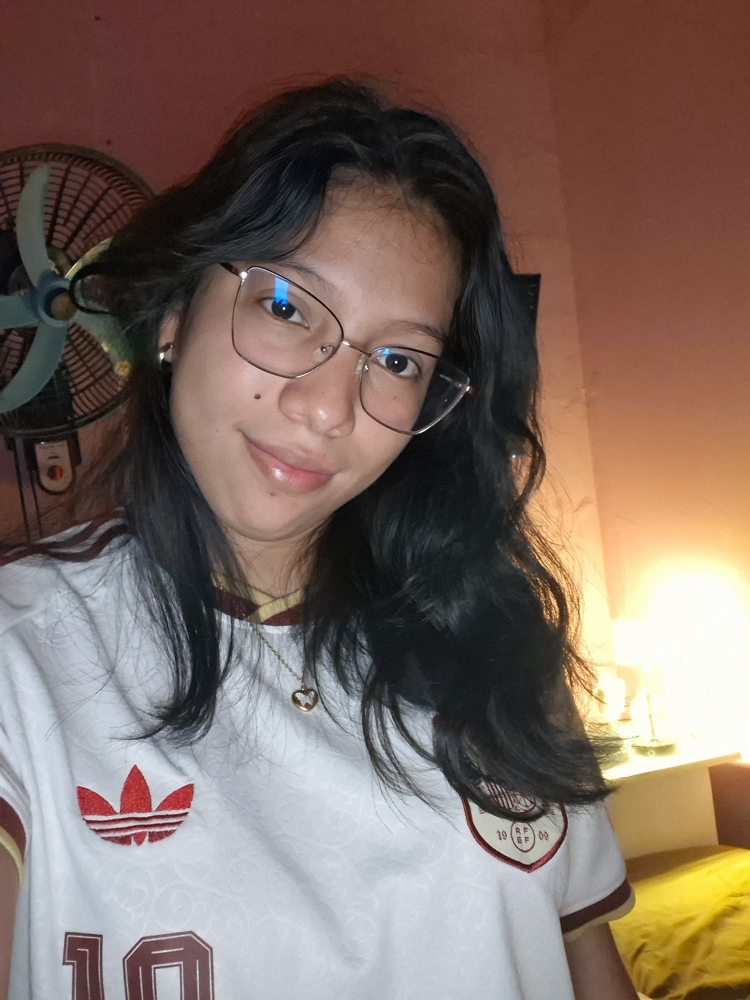

Acerca de mí
"Soy Evelin Jiménez tengo 23 años, estudiante de la Universidad Tecnológica de Panamá. Creé este sitio para el parcial de Desarrollo de Software V. Elegí el desarrollo de videojuegos porque me interesa conocer cómo una idea se convierte en algo que podemos jugar y cómo colaboran las personas encargadas del diseño, el arte y la programación".
